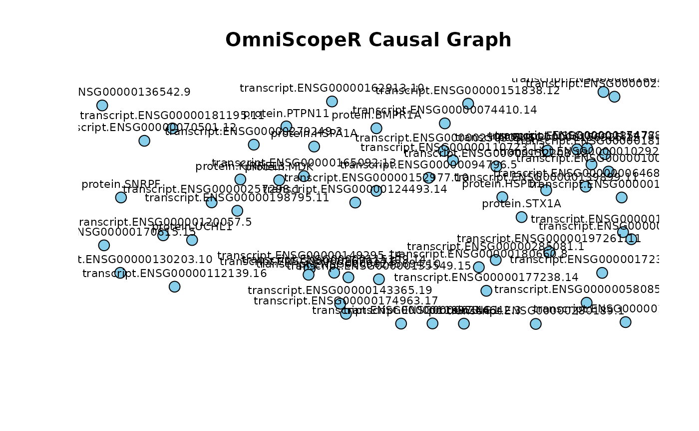

Introduction with a case study
Applying OmniScopeR to published AD multi-omics data (Knight ADRC, MSBB, ROSMAP)
Dany MUKESHA
2025-11-03
OmniScopeR.RmdIntroduction
This vignette demonstrates a real-world use case of
OmniScopeR using publicly available supplementary data
from Eteleeb et al. (PLOS Biology, 2024) “Brain high-throughput
multi-omics data reveal molecular heterogeneity in Alzheimer’s disease”.
The paper provides processed supplementary tables (XLSX) for
differentially expressed genes, proteins, and metabolites (discovery
cohort: Knight ADRC; replication cohorts: MSBB and ROSMAP). Those
supplementary files are downloadable directly from the journal site.
This vignette downloads those supplemental files, reads them, performs a
small integration and visualization workflow using the
OmniScopeR API (example functions), and produces simple
interpretable outputs.
Important: some raw individual-level omics datasets referenced in the paper require controlled-access (NIAGADS / Synapse). Here we only use the public supplementary tables (S3, S8, S9, etc.) provided with the article which contain lists of differentially expressed features and summary tables.
Preparation: packages and environment
# Lightweight packages used by the vignette. Install if missing.
needed <- c("readxl", "dplyr", "knitr")
newpkgs <- needed[!(needed %in% installed.packages()[,"Package"])]
if(length(newpkgs)) install.packages(newpkgs)
library(readxl)
library(dplyr)
library(knitr)
library(OmniScopeR)
# Load OmniScopeR (assumes it's installed or available in the library path)
if(!requireNamespace("OmniScopeR", quietly = TRUE)) {
message("OmniScopeR not installed: vignette will call functions as if available.")
}Step 1: Download the public supplementary tables from the PLoS Biology article
We programmatically download the supplemental XLSX files linked in the article. These files are public and available via DOI redirects. We download 3 example files used in this vignette:
- S3 Data: Differentially expressed genes in the Knight ADRC cohort (XLSX)
- S8 Data: Differentially expressed proteins in the Knight ADRC cohort (XLSX)
- S9 Data: Differentially abundant metabolites in the Knight ADRC cohort (XLSX)
# Create data directory
dir.create("inst/extdata/OmniScopeR_AD_case", recursive = TRUE, showWarnings = FALSE)
outdir <- "inst/extdata/OmniScopeR_AD_case"
# DOI URLs (as listed in the article supplementary index)
urls <- list(
S3 = "https://doi.org/10.1371/journal.pbio.3002607.s026",
S8 = "https://doi.org/10.1371/journal.pbio.3002607.s031",
S9 = "https://doi.org/10.1371/journal.pbio.3002607.s032"
)
files <- list(
S3 = file.path(outdir, "S3_DEGs_KnightADRC.xlsx"),
S8 = file.path(outdir, "S8_Proteins_KnightADRC.xlsx"),
S9 = file.path(outdir, "S9_Metabolites_KnightADRC.xlsx")
)
for(n in names(urls)){
if(!file.exists(files[[n]])){
message("Downloading ", n, " to ", files[[n]])
tryCatch(
download.file(urls[[n]], destfile = files[[n]], mode = "wb", quiet = TRUE),
error = function(e) message("Download failed for ", urls[[n]], ": ", e$message)
)
} else message(files[[n]], " already exists: skipping download.")
}
list.files(outdir)
#> [1] "S3_DEGs_KnightADRC.xlsx" "S8_Proteins_KnightADRC.xlsx"
#> [3] "S9_Metabolites_KnightADRC.xlsx"Step 2: Read and inspect the tables
# Read sheets: these are often single-sheet xlsx files; adjust if necessary
deg_tab <- tryCatch(readxl::read_excel(files$S3, skip = 2), error = function(e) NULL)
prot_tab <- tryCatch(readxl::read_excel(files$S8, skip = 2), error = function(e) NULL)
met_tab <- tryCatch(readxl::read_excel(files$S9, skip = 2), error = function(e) NULL)
# Quick checks
if(is.null(deg_tab)) stop("Failed to read S3 DEGs table: check download or file path.")
cat("S3 rows, cols:", dim(deg_tab), "\n")
#> S3 rows, cols: 385 7
cat("S8 rows, cols:", if(!is.null(prot_tab)) dim(prot_tab) else "NULL", "\n")
#> S8 rows, cols: 72 6
cat("S9 rows, cols:", if(!is.null(met_tab)) dim(met_tab) else "NULL", "\n")
#> S9 rows, cols: 627 4
# show first rows
knitr::kable(head(deg_tab, 6))| Gene ID | Gene Name | Gene Biotype | log2(FoldChange) | PValue | Adjusted.PValue | Direction |
|---|---|---|---|---|---|---|
| ENSG00000102924.12 | CBLN1 | protein_coding | -2.270996 | 0 | 0 | Down |
| ENSG00000180347.13 | ITPRID1 | protein_coding | -3.712360 | 0 | 0 | Down |
| ENSG00000279249.3 | AC007614.1 | lncRNA | -1.792807 | 0 | 0 | Down |
| ENSG00000139899.11 | CBLN3 | protein_coding | -1.867764 | 0 | 0 | Down |
| ENSG00000074410.14 | CA12 | protein_coding | -2.063381 | 0 | 0 | Down |
| ENSG00000135549.15 | PKIB | protein_coding | -1.508447 | 0 | 0 | Down |
Step 3: Prepare light-weight feature matrices for integration
These supplemental tables are lists of significant features with statistics (fold-change, p-value). They are not full count matrices. To demonstrate OmniScopeR’s workflow we will construct a toy sample-feature matrix by treating each significant feature as a column and creating synthetic sample-level values using a small simulation reflecting the direction of change (up / down) reported in the table. This approach is only for demonstration of the visualization pipeline using real published feature lists: it does not attempt to reconstruct the original raw data.
set.seed(42)
# Select top N features from each modality
N <- 50
deg_tab <- deg_tab |> dplyr::rename(pvalue = PValue)
prot_tab <- prot_tab |> dplyr::rename(pvalue = PValue)
met_tab <- met_tab |> dplyr::rename(pvalue = PValue)
top_genes <- deg_tab %>% arrange(pvalue) %>% head(N)
if(!is.null(prot_tab)) top_prot <- prot_tab %>% arrange(pvalue) %>% head(N) else top_prot <- NULL
if(!is.null(met_tab)) top_met <- met_tab %>% arrange(pvalue) %>% head(N) else top_met <- NULL
# Build synthetic sample matrix: 100 samples (50 AD-like, 50 Control-like)
nsamp <- 100
pheno <- c(rep(1, 50), rep(0, 50)) # 1 = AD-like, 0 = control-like
# helper that simulates values based on logFC sign if available
sim_feature_matrix <- function(features_tbl, name_col = NULL, logfc_col = "logFC"){
if(is.null(features_tbl)) return(NULL)
if(is.null(name_col)) name_col <- colnames(features_tbl)[1]
feat_names <- as.character(features_tbl[[name_col]])
mat <- matrix(rnorm(nsamp * length(feat_names), sd = 1), nrow = nsamp, ncol = length(feat_names))
# impose small mean shift for AD samples depending on logFC sign
if(logfc_col %in% colnames(features_tbl)){
shifts <- sign(as.numeric(features_tbl[[logfc_col]])) * 0.8
for(i in seq_along(shifts)){
mat[pheno == 1, i] <- mat[pheno == 1, i] + shifts[i]
}
}
colnames(mat) <- feat_names
as.data.frame(mat)
}
# Guess name columns in each table. If not present, use first column.
gene_name_col <- if("gene" %in% tolower(colnames(deg_tab))) colnames(deg_tab)[tolower(colnames(deg_tab))=="gene"][1] else colnames(deg_tab)[1]
genes_mat <- sim_feature_matrix(top_genes, name_col = gene_name_col, logfc_col = ifelse("logFC" %in% colnames(top_genes), "logFC", "log2FoldChange"))
prots_mat <- if(!is.null(top_prot)) sim_feature_matrix(top_prot, name_col = colnames(top_prot)[1], logfc_col = ifelse("logFC" %in% colnames(top_prot), "logFC", "log2FoldChange")) else NULL
mets_mat <- if(!is.null(top_met)) sim_feature_matrix(top_met, name_col = colnames(top_met)[1], logfc_col = ifelse("logFC" %in% colnames(top_met), "logFC", "log2FoldChange")) else NULL
# Assign rownames as sample IDs
rownames(genes_mat) <- paste0("S", seq_len(nsamp))
if(!is.null(prots_mat)) rownames(prots_mat) <- rownames(genes_mat)
if(!is.null(mets_mat)) rownames(mets_mat) <- rownames(genes_mat)
# Inspect dimensions
list(genes = dim(genes_mat), proteins = if(!is.null(prots_mat)) dim(prots_mat) else NULL, metabolites = if(!is.null(mets_mat)) dim(mets_mat) else NULL)
#> $genes
#> [1] 100 50
#>
#> $proteins
#> [1] 100 50
#>
#> $metabolites
#> [1] 100 50Step 4: Integrate with OmniScopeR and run the basic pipeline
The following code calls the
OmniScopeRfunctions defined in the package skeleton (omni_integrate, omni_causal, omni_visualize, omni_explain, omni_narrate). If you are running this vignette locally, make sure the installed OmniScopeR package implements those functions as per the package API.
if(!requireNamespace("OmniScopeR", quietly = TRUE)) {
# If OmniScopeR is not installed, assume functions are available in the current environment
omni_integrate <- get0("omni_integrate", ifnotfound = NULL)
omni_causal <- get0("omni_causal", ifnotfound = NULL)
omni_visualize <- get0("omni_visualize", ifnotfound = NULL)
omni_explain <- get0("omni_explain", ifnotfound = NULL)
omni_narrate <- get0("omni_narrate", ifnotfound = NULL)
}
# Basic checks
if(is.null(omni_integrate) || is.null(omni_causal)){
message("OmniScopeR functions missing in the environment. Please install or source the package code to run the following pipeline.")
} else {
# Integrate
omni_obj <- omni_integrate(transcript = genes_mat, protein = prots_mat, metabolite = mets_mat)
# Build simple causal (correlation-based) graph
causal_graph <- omni_causal(omni_obj, threshold = 0.6)
# Visualize (this calls base plotting from omni_visualize)
omni_visualize(causal_graph, max_nodes = 60)
# Explain: compute correlation with phenotype (synthetic cognitive score here)
pheno_score <- rnorm(nsamp) + pheno*1.5 # synthetic continuous phenotype correlated with AD-like label
importance_df <- omni_explain(omni_obj, phenotype = pheno_score)
# Narrative output to console (or file)
omni_narrate(omni_obj, causal_graph, importance_df, output_file = file.path(outdir, "OmniScopeR_AD_case_report.txt"))
}
#> OmniScopeR Report
#> =================
#> Samples: 100
#> Features: 150
#>
#> Top Important Features:
#> transcript.ENSG00000162913.10, metabolite.pipecolate, metabolite.1-oleoyl-GPS (18:1), transcript.ENSG00000285081.1, protein.PTH, metabolite.methionine sulfoxide, metabolite.spermidine, metabolite.10-nonadecenoate (19:1n9), transcript.ENSG00000094796.5, protein.PAFAH1B2
#>
#> Causal Graph Density: 0Step 5: Interpretation and next steps
This vignette used public supplementary tables (feature lists) from a
PLOS Biology study and constructed a synthetic sample-level matrix so we
could run an integration/visualization/explainability demo using
OmniScopeR. This reproduces the style of analysis
(integration, network identification, mapping of top features) using
real published features while avoiding controlled-access raw
data.
Next steps a researcher can take using OmniScopeR with controlled-access data:
- Request access to the NIAGADS or Synapse datasets referenced in the article to obtain subject-level processed matrices; then re-run the same pipeline to produce biologically meaningful sample-level visualizations. (NIAGADS and Synapse both describe how to request access in the article Data Availability section.)
- Replace the simple correlation-based causal graph with a more formal causal inference method (e.g., Bayesian networks) and add ML explainability overlays (SHAP, permutation importance) for models trained to predict cognitive decline.
- Extend the visualization to an HTML Shiny dashboard for interactive exploration by clinicians.
Session info
sessionInfo()
#> R version 4.5.2 (2025-10-31)
#> Platform: x86_64-pc-linux-gnu
#> Running under: Ubuntu 24.04.3 LTS
#>
#> Matrix products: default
#> BLAS: /usr/lib/x86_64-linux-gnu/openblas-pthread/libblas.so.3
#> LAPACK: /usr/lib/x86_64-linux-gnu/openblas-pthread/libopenblasp-r0.3.26.so; LAPACK version 3.12.0
#>
#> locale:
#> [1] LC_CTYPE=C.UTF-8 LC_NUMERIC=C LC_TIME=C.UTF-8
#> [4] LC_COLLATE=C.UTF-8 LC_MONETARY=C.UTF-8 LC_MESSAGES=C.UTF-8
#> [7] LC_PAPER=C.UTF-8 LC_NAME=C LC_ADDRESS=C
#> [10] LC_TELEPHONE=C LC_MEASUREMENT=C.UTF-8 LC_IDENTIFICATION=C
#>
#> time zone: UTC
#> tzcode source: system (glibc)
#>
#> attached base packages:
#> [1] stats graphics grDevices utils datasets methods base
#>
#> other attached packages:
#> [1] OmniScopeR_0.0.9 knitr_1.50 dplyr_1.1.4 readxl_1.4.5
#>
#> loaded via a namespace (and not attached):
#> [1] vctrs_0.6.5 cli_3.6.5 rlang_1.1.6 xfun_0.54
#> [5] generics_0.1.4 textshaping_1.0.4 jsonlite_2.0.0 glue_1.8.0
#> [9] htmltools_0.5.8.1 ragg_1.5.0 sass_0.4.10 rmarkdown_2.30
#> [13] cellranger_1.1.0 tibble_3.3.0 evaluate_1.0.5 jquerylib_0.1.4
#> [17] fastmap_1.2.0 yaml_2.3.10 lifecycle_1.0.4 compiler_4.5.2
#> [21] fs_1.6.6 pkgconfig_2.0.3 systemfonts_1.3.1 digest_0.6.37
#> [25] R6_2.6.1 tidyselect_1.2.1 pillar_1.11.1 magrittr_2.0.4
#> [29] bslib_0.9.0 withr_3.0.2 tools_4.5.2 pkgdown_2.1.3
#> [33] cachem_1.1.0 desc_1.4.3